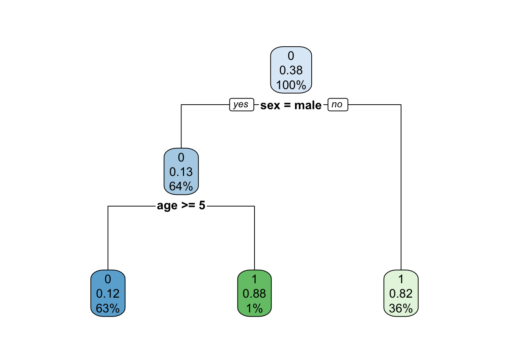
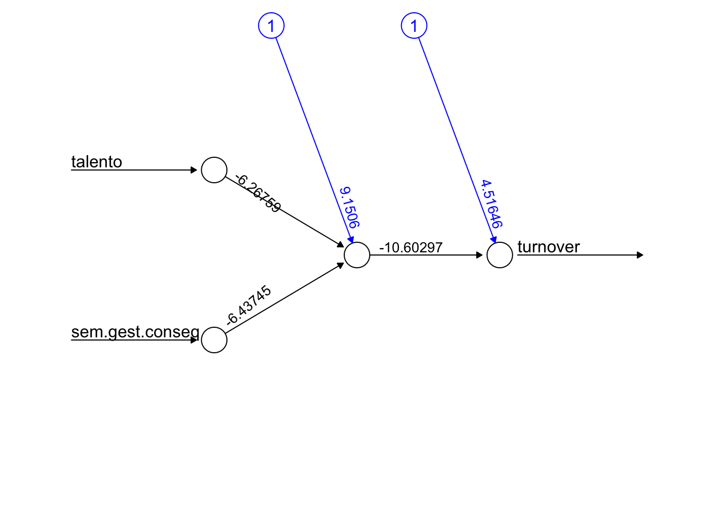

# Definindo o seed
set.seed(123)
# Criando 100 linhas de dados aleatórios, com uma variável X e Y
df_clustering <- dplyr::tibble(
x = rnorm(500, mean = 0, sd = 0.3),
y = rnorm(500, mean = 0, sd = 0.3)
) |>
dplyr::bind_rows(
dplyr::tibble(
x = rnorm(500, mean = 1, sd = 0.3),
y = rnorm(500, mean = 1, sd = 0.3)
)
)
# Plotando o scatter plot
highcharter::hchart(
df_clustering,
name= "Dados aleatórios",
type = "scatter",
hcaes(x = "x", y = "y"),
showInLegend = FALSE
) %>%
highcharter::hc_title(
text = "Dados aleatórios com variâncias diferentes"
) %>%
highcharter::hc_size(height = 400)4 Machine Learning para negócios
Machine Learning, ou Aprendizado de Máquina, é uma área muito ampla e bastante complexa. Contudo, é também um campo com infinitas possibilidades de uso. Nos negócios não é diferente, é possível aplicar machine learning de diversas maneiras.
Aprendizado de máquina (machine learning) é dar a uma máquina a habilidade de aprender, mesmo que nem tudo esteja explicitamente programado. Contudo, existem duas grandes divisões iniciais de formas pela qual o aprendizado de máquina pode ocorrer: aprendizado de máquina supervisionado; e aprendizado de máquina não supervisionado. Veja os detalhes neste capítulo.
O objetivo deste capítulo é trazer os conceitos básicos para alguns dos principais modelos de aprendizado de máquina e na sequência mostrar como implementá-los. Não é propósito deste material entrar a fundo nos detalhes de cada modelo, pois a proposta é focar na compreensão dos conceitos e dos casos de usos para rápida aplicação na área de negócios.
4.1 O que é aprendizado de máquina?
O aprendizado de máquina ocorre quando um algoritmo ou um programa de computador consegue melhorar sua performance nas tarefas que desempenha com base na experiência, utilizando inteligência artificial. Essa experiência ocorre com a alimentação de dados e informações colhidas a partir de interações com o mundo real.
Dessa forma, podemos dividir o aprendizado de máquina em supervisionado, que busca responder um target, ou seja, há uma variável explícita a ser respondida; e não supervisionado, em que busca-se identificar grupos ou padrões a partir dos dados, sem um objetivo específico a ser alcançado.
Na sequência do capítulo veja os principais conceitos, métodos e exemplos introdutórios de aplicações de aprendizado de máquina na linguagem R.
4.1.1 Como machine learning gera valor nos negócios?
Aprendizado de máquina é composto por um conjunto de métodos. Sendo assim, para identificar qual tipo de abordagem de machine learning é mais adequada a cada situação é preciso entender muito bem a pergunta de negócio que busca-se resolver.
Neste contexto vale ressaltar que o mais importante não é o método em si.
A questão é: não existem problemas de aprendizado de máquina para serem resolvidos, mas sim problemas práticos de negócio. Por isso, o foco deve ser mantido em soluções que atendam às dores sentidas pelas empresas e que de fato vão resolver problemas reais.
Assim, o aprendizado de máquina irá gerar muito valor para as empresas.
4.1.2 Aprendizado de máquina supervisionado
Em termos de machine learning aplicado a empresas, quando se tem uma pergunta de negócio do tipo “Qual ação de marketing mais impacta nas vendas?” estamos falando de aprendizado de máquina supervisionado, pois estamos tentando identificar as causas que impactam na variável “vendas”.
Nos modelos de aprendizagem de máquina supervisionada conseguimos dar pesos ou calibrar o nível de assertividade e de precisão de um modelo. A maior parte dos modelos de machine learning são supervisionados.
São dividos em:
- Regressão: métodos de regressão buscam encontrar como uma variável evolui em relação a outras. Estão entre os métodos mais comuns e mais ensinados nas aulas de estatística nas universidades.
- Classificação: são métodos que buscam explicar uma variável categórica, com duas categorias (variável binária) ou mais.
Podem existir ainda modelos de aprendizado de máquina mistos, que podem utilizar partes de regressão para fazer classificação, ou o oposto.
4.1.3 Aprendizado de máquina não supervisionado
Quando a pergunta de negócio é algo do tipo “Quais os perfis de clientes que compram em uma loja?” estamos falando de aprendizado de máquina não supervisionado. Neste caso, portanto, não temos uma variável específica a ser respondida, pois estamos apenas buscando encontrar os indivíduos, itens ou elementos semelhantes.
Modelos não supervisionados são mais raros na prática, mas são muito úteis para guiar o raciocínio do cientista de dados no processo de exploração dos dados para análises futuras.
5 Aprendizado de máquina não supervisionado
5.1 Clustering
Modelos de Clustering referem-se a técnicas de agrupamento, dentro de aprendizado não supervisionado.
É uma abordagem para encontrar perfis similares, sem buscar a explicação para uma variável especificamente.
Exemplos de usos:
- Identificar espécies de plantas;
- Identificar áreas de maior criminalidade;
- Segmentação de clientes para encontrar características comuns em grupos de clientes. Pode auxiliar, por exemplo, na análise de churn (perfis de clientes que mais cancelam);
- Detecção de fraudes (indivíduos outliers, cujas combinações de atributos não se enquadram nos clusters).
Para exemplificar os métodos de clustering será utilizado o modelo K-means.
Como funciona o K-means?
- Faz o particionamento de n observações em k clusters.
- Adiciona cada observação ao cluster cujo centróide esteja mais próximo (tecnicamente é a menor distância euclidiana).
- Define os centróides por iterações que minimizam as distâncias.
- É preciso escolher o número de clusters.
5.1.1 Aplicando K-Means a dados gerados aleatoriamente
Inicialmente criamos uma matriz com duas variáveis aleatórias. Ambas variáveis de dados aleatórios possuem desvio-padrão de 0,3. Porém uma delas possui média 0 e a outra média 1.
Então, aplicamos o K-Means com dois centróides, com o fim de dividir o conjunto de dados em dois clusters.
# Aplicando o K-Means com dois centróides
cl <- kmeans(
x = df_clustering,
centers = 2
)
# Unindo as colunas do dataset de variáveis aleatórias com os clusters
df_clustering <- cbind(df_clustering, cl = cl$cluster) %>%
mutate(cl = as.factor(cl))Veja como ficou a quantidade de linhas de dados distribuídas nos dois cluster solicitados:
df_clustering %>% dplyr::group_by(cl) %>% dplyr::tally()# A tibble: 2 × 2
cl n
<fct> <int>
1 1 494
2 2 506Na sequência, o gráfico do tipo scatter plot identificando visualmente cada um dos dois clusters criados.
# Criando scatter plot com identificação de cores para cada cluster
highcharter::hchart(
df_clustering,
name = "Dados aleatórios",
type = "scatter",
hcaes(x = "x", y = "y", group = "cl"),
showInLegend = FALSE
) %>%
highcharter::hc_title(
text = "Clustering (K-means) de dados aleatórios com variâncias diferentes"
) %>%
highcharter::hc_size(height = 400)Exercício
- Altere a quantidade de observações de 100 para 1000 e veja como o K-Means se comporta.
- Altere o desvio-padrão de 0,3 para 3 (mantendo 1000 observações) e veja como o K-Means se comporta.
5.1.2 Aplicando K-Means para o Iris dataset
Iris dataset é um conjunto de dados de 150 medidas realizadas em 3 espécies diferentes de um tipo de flor (Iris). É um conjunto de dados muito usado para testes em algoritmos de reconhecimento de padrões. Um dos pontos que torna este conjunto de dados interessante é o fato de que uma espécie é linearmente separável das outras duas, mas as duas restantes não podem ser separadas de forma linear. Veja mais.
5.1.2.1 Conhecendo o conjunto de dados
Veja o resumo dos dados:
summary(iris) Sepal.Length Sepal.Width Petal.Length Petal.Width
Min. :4.300 Min. :2.000 Min. :1.000 Min. :0.100
1st Qu.:5.100 1st Qu.:2.800 1st Qu.:1.600 1st Qu.:0.300
Median :5.800 Median :3.000 Median :4.350 Median :1.300
Mean :5.843 Mean :3.057 Mean :3.758 Mean :1.199
3rd Qu.:6.400 3rd Qu.:3.300 3rd Qu.:5.100 3rd Qu.:1.800
Max. :7.900 Max. :4.400 Max. :6.900 Max. :2.500
Species
setosa :50
versicolor:50
virginica :50
A seguir, seguem scatter plots comparando as 4 variáveis em questão de duas em duas para entender melhor os dados. Primeiro observe os gráficos sem classificá-los em grupos e na sequência classificados por grupos.
hchart(
iris,
name = "Iris",
type = "scatter",
hcaes(x = Petal.Length, y = Petal.Width),
showInLegend = FALSE
) %>%
highcharter::hc_size(height = 300)
hchart(
iris,
name = "Iris",
type = "scatter",
hcaes(x = Sepal.Length, y = Sepal.Width),
showInLegend = FALSE
) %>%
highcharter::hc_size(height = 300) Olhando apenas os gráficos acima, quantos grupos você chutaria que existem nestes dados?
Agora veja os mesmos dados, mas com a cor indicando os grupos de flores:
# Relacionando Sepal Length e Sepal Width
hchart(
iris,
type = "scatter",
hcaes(
x = Petal.Length,
y = Petal.Width,
group = Species
),
showInLegend = TRUE
) %>%
highcharter::hc_size(height = 300)
# Relacionando Sepal Length e Sepal Width
hchart(
iris,
type = "scatter",
hcaes(
x = Sepal.Length,
y = Sepal.Width,
group = Species
),
showInLegend = TRUE
) %>%
highcharter::hc_size(height = 300) 5.1.2.2 Pré-processamento: normalizando os dados
# Separando a colunas de espécies das colunas numéricas
iris.new <- iris |>
dplyr::select(
Sepal.Length,
Sepal.Width,
Petal.Length,
Petal.Width
)
iris.class <- iris[,"Species"]
head(iris.new) Sepal.Length Sepal.Width Petal.Length Petal.Width
1 5.1 3.5 1.4 0.2
2 4.9 3.0 1.4 0.2
3 4.7 3.2 1.3 0.2
4 4.6 3.1 1.5 0.2
5 5.0 3.6 1.4 0.2
6 5.4 3.9 1.7 0.4Se for o caso de usar uma função para normalizar os dados, o código está comentado abaixo.
# # Criando função de normalização, se for o caso.
# normalize <- function(x){
# return ((x-min(x))/(max(x)-min(x)))
# }
#
# # Aplicando a função de normalização a todas as colunas, se for o caso.
# iris.new <- iris.new %>% mutate_all(normalize)
#
# head(iris.new)5.1.2.3 Aplicando o K-means
Definindo o número de centróides o dado, já na função do kmeans:
# Aplicar K-Means com 3 centróides
result <- kmeans(
x = iris.new,
centers = 3
) Veja os tamanhos de cada cluster final, lembrando que o tamanho real é de 50 observações para espécie.
result$size [1] 62 50 38Vejamos como ficaram os valores dos centróides para cada uma das 4 variáveis.
result$centers # retorna o valor do ponto central de cada cluster (para 3 centróides, k=3) Sepal.Length Sepal.Width Petal.Length Petal.Width
1 5.901613 2.748387 4.393548 1.433871
2 5.006000 3.428000 1.462000 0.246000
3 6.850000 3.073684 5.742105 2.071053Por fim, conseguimos também obter clusters definidos para cada linha de dado pelo algoritmo.
result$cluster [1] 2 2 2 2 2 2 2 2 2 2 2 2 2 2 2 2 2 2 2 2 2 2 2 2 2 2 2 2 2 2 2 2 2 2 2 2 2
[38] 2 2 2 2 2 2 2 2 2 2 2 2 2 1 1 3 1 1 1 1 1 1 1 1 1 1 1 1 1 1 1 1 1 1 1 1 1
[75] 1 1 1 3 1 1 1 1 1 1 1 1 1 1 1 1 1 1 1 1 1 1 1 1 1 1 3 1 3 3 3 3 1 3 3 3 3
[112] 3 3 1 1 3 3 3 3 1 3 1 3 1 3 3 1 1 3 3 3 3 3 1 3 3 3 3 1 3 3 3 1 3 3 3 1 3
[149] 3 15.1.3 Verificação dos resultados
O código abaixo apenas cria os gráficos que seguem, comparando as classificações da clusterização pelo K-means com os rótulos reais da coluna “Species”.
# Concatenando coluna de cluster criado
iris.new.cl <- cbind(
iris.new,
"cl.kmeans" = result$cluster,
"Species" = iris.class
) %>%
# Alterando nomes das Species para ficar com as mesmas cores nos gráficos de Cluster x Real
dplyr::mutate(
"Species" =
dplyr::case_when(
Species == "versicolor" ~ "1. versicolor",
Species == "virginica" ~ "2. virginica",
Species == "setosa" ~ "3. setosa"
)
)# Relacionando Sepal Length e Sepal Width - CLUSTER
hchart(
iris.new.cl,
type = "scatter",
hcaes(
x = "Sepal.Length",
y = "Sepal.Width",
group = "cl.kmeans"
),
showInLegend = TRUE
) %>%
highcharter::hc_size(height = 300) %>%
hc_title(text = "Clusters")
# Relacionando Sepal Length e Sepal Width - REAL
hchart(
iris.new.cl,
type = "scatter",
hcaes(
x = "Sepal.Length",
y = "Sepal.Width",
group = "Species"
),
showInLegend = TRUE
) %>%
highcharter::hc_size(height = 300) %>%
hc_title(text = "Real")# Relacionando Petal Length e Petal Width - CLUSTER
hchart(
iris.new.cl,
type = "scatter",
hcaes(
x = "Petal.Length",
y = "Petal.Width",
group = "cl.kmeans"
),
showInLegend = TRUE
) %>%
highcharter::hc_size(height = 300) %>%
hc_title(text = "Clusters")
# Relacionando Petal Length e Petal Width - REAL
hchart(
iris.new.cl,
type = "scatter",
hcaes(
x = "Petal.Length",
y = "Petal.Width",
group = "Species"
),
showInLegend = TRUE
) %>%
highcharter::hc_size(height = 300) %>%
hc_title(text = "Real")O objetivo do aprendizado não supervisionado é encontrar grupos similares quando não se tem um rótulo. Contudo, como este é um exemplo didático e temos os “rótulos”, ou seja, as espécies de cada flor (linha de dado), então podemos inferir as espécies a que cada cluster se refere se olharmos para a tabela de contigência a seguir:
table(result$cluster,iris.class) iris.class
setosa versicolor virginica
1 0 48 14
2 50 0 0
3 0 2 36Os resultados foram:
- Cluster 1 corresponde à espécie “Versicolor”.
- Cluster 2 corresponde à espécie “Virgínica”.
- Cluster 3 corresponde à espécie “Setosa”.
5.1.4 Fontes
- http://rpubs.com/Nitika/kmeans_Iris
- https://rpubs.com/AnanyaDu/361293
5.2 Principal Component Analysis (PCA)
Podemos comparar duas variáveis (colunas) de cada vez se usarmos diagramas de dispersão (scatter plots). Porém, veja a quantidade necessária de scatter plots dependendo da quantidade de variáveis a serem comparadas:
- 2 variáveis (A,B) = 1 scatter = (AxB)
- 3 variáveis (A,B,C) = 3 scatters = (AxB), (AxC), (BxC)
- 4 variáveis (A,B,C,D) = 6 scatters = (AxB), (AxC), (AxD), (BxC), (BxD), (CxD)
Além da enorme quantidade de scatter plots necessários, fica extremamente inviável conseguir analisar todos esses gráficos e tirar valor deles com análises visuais.
O PCA, neste sentido, busca auxiliar neste problema, pois é capaz de resumir as variáveis de um conjunto de dados em “componentes principais” que contém a maior parte da variância das variáveis originais.
O n dos componentes principais é igual ao número de variáveis originais. Contudo, normalmente em poucos componentes praticamente toda correlação das variáveis originais é “absorvida” e 2 ou 3 componentes contemplam praticamente toda a variância do conjunto de dados.
Os componentes principais (PC’s) são classificados por ordem de explicação da variância. Sendo assim, o PC1 explica mais a variabilidade dos dados do que o PC2, e assim por diante.
Dessa forma, um procedimento que costuma-se fazer para visualizar melhor o impacto das variáveis com o auxílio do PCA é utilizar gráficos de dispersão entre 2 PC’s de cada vez. Além disso, também é possível mostrar a direção para a qual cada variável original aponta no espaço 2D de cada scatter plot. Este tipo de gráfico é chamado de biplot.
Exemplos de usos:
- Análise exploratória, como identificar visualmente no biplots como as variáveis se relacionam dentro dos componentes.
- Redução de dimensionalidade: reduz o tempo de processamento e pode melhorar os resultados de modelos preditivos ao usar PCA nos dados de treino e teste.
- Compressão de imagens, entre outros.
Como funciona o PCA?
Partimos de um dataset com as variáveis originais e chegamos a um dataset reduzido a “compontes principais”.
- A grosso modo, procura encontrar “linhas retas” que melhor expressam as direções dos dados em multi-dimensões.
- Não é recomendado para variáveis categóricas (apenas numéricas).
- Se concentra nas direções que definem a maior parte da variância dos dados.
- Autovetor (eigenvector): é a direção (vertical ou 45 graus).
- Autovalor (eigenvalue): é um número que expressa o quanto há de variância naquela direção.
O autovetor com maior autovalor é o primeiro componente principal.
5.2.1 Aplicando PCA no conjunto de dados mtcars
O conjunto de dados “Motor Trend Car Road Tests” foi extraído de uma revista automobilística de 1974 e contempla 10 variáveis que representam características ou métricas de desempenho dos veículos. Os dados são nativos do R, basta digitar mtcars no console. Pra informações, como dicionário de dados, basta digitar ? mtcars, e accessar a documentação de ajuda.
Veja o head dos dados:
data <- mtcars %>% dplyr::select(-c("vs", "am"))
data %>% head(5) mpg cyl disp hp drat wt qsec gear carb
Mazda RX4 21.0 6 160 110 3.90 2.620 16.46 4 4
Mazda RX4 Wag 21.0 6 160 110 3.90 2.875 17.02 4 4
Datsun 710 22.8 4 108 93 3.85 2.320 18.61 4 1
Hornet 4 Drive 21.4 6 258 110 3.08 3.215 19.44 3 1
Hornet Sportabout 18.7 8 360 175 3.15 3.440 17.02 3 2Aplicando a função prcomp, nativa do R Stats, a qual executa uma análise dos componentes principais.
mtcars.pca <- prcomp(data, center = TRUE, scale. = TRUE)Cada análise de PCA resulta em um número de componentes principais igual ao número de variáveis. Porém, não pode-se dizer que um PCA é análogo a uma determinada variável.
A seguir, é apresentado resumo da importância de cada um dos componentes principais identificados.
summary(mtcars.pca)$importance PC1 PC2 PC3 PC4 PC5
Standard deviation 2.378222 1.442948 0.7100809 0.5148082 0.4279704
Proportion of Variance 0.628440 0.231340 0.0560200 0.0294500 0.0203500
Cumulative Proportion 0.628440 0.859780 0.9158100 0.9452500 0.9656000
PC6 PC7 PC8 PC9
Standard deviation 0.3518426 0.3241326 0.2418962 0.1489644
Proportion of Variance 0.0137500 0.0116700 0.0065000 0.0024700
Cumulative Proportion 0.9793600 0.9910300 0.9975300 1.0000000Veja que os 4 primeiros componentes principais já são responsáveis por 95% da porporção da variância dos dados.
Segue o head dos 4 primeiros componentes principais, em que cada linha é uma linha de dado (um carro) e cada coluna é substituída por um componente principal (que não mais representa nenhuma coluna especificamente, mas contém variância “misturada” das variáveis originais):
mtcars.pca$x[,1:4] %>% head(10) PC1 PC2 PC3 PC4
Mazda RX4 -0.66422351 1.1734476 -0.2043172 -0.12601751
Mazda RX4 Wag -0.63719807 0.9769448 0.1107778 -0.08567709
Datsun 710 -2.29973601 -0.3265893 -0.2101495 -0.10862524
Hornet 4 Drive -0.21529670 -1.9768101 -0.3294682 -0.30806225
Hornet Sportabout 1.58697405 -0.8287285 -1.0329925 0.14738418
Valiant 0.04960512 -2.4466838 0.1117777 -0.87154914
Duster 360 2.71439677 0.3610529 -0.6520604 0.09633337
Merc 240D -2.04370658 -0.8006412 0.8489880 -0.27451338
Merc 230 -2.29506729 -1.3056004 1.9684845 0.05055875
Merc 280 -0.38252133 0.5811211 0.8863227 0.070269465.2.2 Visualizando graficamente os resultados do PCA
É possível também criar um biplot para visualizar como cada variável impacta nas relações entre os componentes principais. Para isso vamos usar novamente o pacote de visualização highcharter.
Agora, veja o gráfico biplot que compara o PC1 e PC2 e mostra como cada variável impactou na construção de cada componente. Cada ponto do gráfico corresponde a uma linha de dado (dataset com 32 linhas no total).
# Criando Biplot para PC1 e PC2
highcharter::hchart(mtcars.pca, choices = 1:2) %>%
highcharter::hc_title(text = "Biplot para PC1 e PC2") %>%
highcharter::hc_xAxis(title = list(text = "PC1")) %>%
highcharter::hc_yAxis(title = list(text = "PC2"))Por fim, segue gráfico biplot comparando PC2 e PC3.
# Criando Biplot para PC2 e PC3
highcharter::hchart(mtcars.pca, choices = 2:3) %>%
highcharter::hc_title(text = "Biplot para PC2 e PC3") %>%
highcharter::hc_xAxis(title = list(text = "PC2")) %>%
highcharter::hc_yAxis(title = list(text = "PC3"))5.2.3 Considerações
O resultado de uma análise de componentes principais pode ser utilizado para estimar outros modelos. Veja, se você possui um dataset com um número muito grande de variáveis, o PCA viabiliza que haja uma redução de muitas variáveis para poucos componentes principais que expressem a maior parte da variância dos dados. A maior dificuldade desta abordagem é analisar os resultados depois, pois não há uma interpretação “real” para os valores dos componentes principais.
6 Aprendizado de máquina supervisionado
6.1 Regressão linear
Relaciona uma variável dependente (target, rótulo) com uma matriz de variáveis explicativas (independentes):
\[y = \alpha + \beta_1 x_1 + \beta_2 x_2 + \dots \beta_n x_n + e\]
Possui diversas premissas acerca dos dados, como:
- Relação linear entre as variáveis.
- Média e variância constantes (séries estacionárias).
- Sem tendências ou sazonalidades.
Algumas considerações adicionais são:
- Caso as premissas não sejam verdade na prática (normalmente não é), as variáveis devem ser transformadas (ln, diferença, por exemplo).
- As variáveis explicativas, se não forem numéricas, são transformadas em dummy (binarizadas).
- Modelos de regressão são muito utilizados em análises de séries temporais.
Exemplos de usos:
- Estimar peso ou altura em determinada idade.
- Diversas aplicações em econometria em séries econômicas e financeiras.
- Previsões em meteorologia.
Obs.: Métodos de regressão linear possuem diversas variações, e é uma área de estudo com muitos métodos específicos. O exemplo dado acima é apenas o caso mais simples.
6.1.1 Exemplo: velocidade contra tempo para um carro parar (dados de 1920’s)
Veja um exemplo de dados que mostram a velocidade de um carro e o tempo que ele levava até parar completamente.
Variáveis:
speed: velocidade em milhas por hora (1 mph = 1,61 km/h).dist: distância que o carro levou para parar completamente, em pés (1 ft = 0,31 metros).
Head dos dados:
head(cars,5) speed dist
1 4 2
2 4 10
3 7 4
4 7 22
5 8 16O modelo:
\[dist = \alpha + \beta_1 speed + e\]
Estimando o modelo:
# Estimar o modelo
reg_model <- lm(dist ~ speed, cars)Criando gráfico de dispersão com a reta de melhor ajuste estimada pelo modelo:
# Ajustar as informações do modelo para plotar no gráfico na sequência
reg_model_df_chart <-
augment(reg_model) %>%
dplyr::mutate(.fitted = round(.fitted, 2))
# Criando o gráfico
highcharter::highchart() %>%
highcharter::hc_xAxis(title = list(text = "Speed (mph)")) %>%
highcharter::hc_yAxis(title = list(text = "Dist (ft)")) %>%
highcharter::hc_add_series(name = "Valores reais",
data = reg_model_df_chart,
type = "scatter",
hcaes(x = speed, y = dist)
) %>%
highcharter::hc_add_series(name = "Predição",
data = reg_model_df_chart,
type = "line",
hcaes(x = speed, y = .fitted)) %>%
hc_title(text = "Valores reais vs Preditos pela regressão linear") %>%
highcharter::hc_size(height = 400)Para concluir, veja que o gráfico de dispersão acima só é possível de ser realizado porque este exemplo trata de uma regressão simples, ou seja, em que temos apenas uma variável independente. Se tivéssemos um caso de regressão múltipla, com duas até \(N\) variáveis independentes, teríamos que fazer um gráfico de dimensão \(N+1\) para exemplificar a regressão linear, o que é possível. Por isso, a visualização da reta de melhor ajuste ao longo de todas as variáveis de uma regressão fica impossível a medida que mais variáveis independentes são adicionadas.
6.2 Regressão Logística
A regressão logística é um tipo de regressão que tem como variável resposta (dependente) uma variável binária, ou seja, os valores possíveis são 0 ou 1, ocorrência ou não de um evento. O resultado do modelo é uma probabilidade, que pode ser transformado em labels de 0 e 1 ao levar em conta um ponto de corte na probabilidade estimada.
“O modelo de regressão logística é adequado para trabalhar com dados qualitativos. Serve para as situações nas quais a variável dependente (Y) é binária (assume os valores de 0 e 1) e o valor que se busca é a probabilidade (\(\pi\)) de que a Y seja 1 dado o valor de determinada variiável x, que poderá tanto ser binária, numérica ou dividida em categorias.” (CHATTERJEE; HADI, 2006; RYAN, 2009).
6.2.1 Exemplo: regressão logística com dados do naufrágio do Titanic
Analisaremos um conjunto de dados dos passageiros do navio Titanic, que naufragou em 1912. Então aplicaremos um modelo de regressão logística para calcular o probabilidade de um passageiro, ao embarcar no navio, vir a sobreviver à tragédia (\(y\), variável dependente).
O dicionário dos dados, que mostra o significado de cada variável, é o seguinte:
survived: sobreviveu \(= 1\); não sobreviveu \(=0\);pclass: classe (1, 2 e 3, indicando primeira, segunda e terceira classe);sex: masculino (male) e feminino (female);age: idade do passageiro;sibsp: número de irmãos e cônjuge (siblings and spouse) a bordo;parch: número de pais e filhos (parents and children) a bordo;fare: tarifa paga pelo passageiro.
Veja como é o head dos dados (5 primeiras observações):
# Download e pequeno tratamento dos dados
df_titanic <-
readr::read_csv("https://gitlab.com/dados/open/raw/master/titanic.csv") %>%
dplyr::select(passengerid, survived, pclass, sex, age, sibsp, parch, fare) %>%
dplyr::mutate_if(is.character, as.factor) %>%
dplyr::mutate(survived = as.factor(survived)) %>%
na.omit()Rows: 1309 Columns: 12
── Column specification ────────────────────────────────────────────────────────
Delimiter: ","
chr (5): name, sex, ticket, cabin, embarked
dbl (7): passengerid, survived, pclass, age, sibsp, parch, fare
ℹ Use `spec()` to retrieve the full column specification for this data.
ℹ Specify the column types or set `show_col_types = FALSE` to quiet this message.head(df_titanic, 5)# A tibble: 5 × 8
passengerid survived pclass sex age sibsp parch fare
<dbl> <fct> <dbl> <fct> <dbl> <dbl> <dbl> <dbl>
1 1 0 3 male 22 1 0 7.25
2 2 1 1 female 38 1 0 71.3
3 3 1 3 female 26 0 0 7.92
4 4 1 1 female 35 1 0 53.1
5 5 0 3 male 35 0 0 8.056.2.2 Dividindo o dataset em treino e teste
Existem diversas formas de fazer esta divisão pela linguagem R. Não há jeito certo ou errado, neste caso o importante é chegar ao objetivo de dividir o dataset.
# O seed é um número que garante que a geração "aleatória" do computador será sempre a mesma.
# Assim garanto que meu exemplo é reproduzível.
set.seed(123)
# Criar o subset de treino
train <- df_titanic %>% dplyr::sample_frac(.70)
# Criar o subset de teste com antijoin (pega tudo que não pertence)
test <- dplyr::anti_join(df_titanic, train, by = 'passengerid')6.2.3 Aplicando o modelo de regressão logística
Vamos utilizar a função glm(), nativa do R. Apenas certifique-se de configurar o parâmetro family para family = binomial(link = 'logit'). No termo da equação, a variável target é precedida de ~. Esta, inclusive, é uma terminologia padrão para a maior parte das funções de modelos supervisionados de machine learning no R.
Importante: o modelo será aplicado no dataset de treino, e não no dataset completo.
# Rodando o modelo
fit <-
glm(
survived ~ pclass + sex + age + sibsp + parch + fare,
family = binomial(link = 'logit'),
data = train
)
# Vendo como ficou o modelo
fit
Call: glm(formula = survived ~ pclass + sex + age + sibsp + parch +
fare, family = binomial(link = "logit"), data = train)
Coefficients:
(Intercept) pclass sexmale age sibsp parch
5.059665 -1.029637 -3.725177 -0.034072 -0.222305 -0.135509
fare
0.002101
Degrees of Freedom: 731 Total (i.e. Null); 725 Residual
Null Deviance: 983
Residual Deviance: 543.8 AIC: 557.8O resultado acima mostra os coeficientes estimados pelo modelo. Estes coeficientes compõem a equação da regressão logística.
Cada coeficiente tem um p-valor associado, que mostra se o impacto da variável associada ao coeficiente foi significativo estatisticamente no modelo. Veja a seguir:
broom::tidy(fit) %>%
dplyr::mutate(p.value = round(p.value,4))# A tibble: 7 × 5
term estimate std.error statistic p.value
<chr> <dbl> <dbl> <dbl> <dbl>
1 (Intercept) 5.06 0.643 7.87 0
2 pclass -1.03 0.177 -5.83 0
3 sexmale -3.73 0.248 -15.0 0
4 age -0.0341 0.00881 -3.87 0.0001
5 sibsp -0.222 0.136 -1.63 0.103
6 parch -0.136 0.128 -1.06 0.289
7 fare 0.00210 0.00220 0.954 0.340 6.2.4 Realizando as predições
Usando a função predict do R para fazer as predições no dataset de teste com base no modelo que foi treinado.
# Fazendo as predições
pred <- predict(fit, newdata = test, type = "response")Na sequência veja como fica a tabela unificando a coluna de predição com os valores reais da variável dependente.
# Concatenando a coluna predita com o dataset de teste
DT::datatable(
cbind("pred" = round(pred, 4), test)
)6.2.5 Avaliação do modelo
A seguir, vamos criar a matriz confusão e calcular a acurácia “na mão”, sem usar função específica para isso, a fim de entendermos o procedimento.
Neste caso, vale ressaltar que o threshold (ponto de corte na probabilidade para definir se a saída será 0 ou 1) é definido de forma arbitrária. Porém, é possível aplicar métodos de otimização do threshold. Um exemplo de uso para otimização é a função thresholder() do pacote caret. Veja mais. Esta função não foi aplicada neste exemplo porque todo o modelo deve ter sido rodado com funções do caret para que seja possível realizar esta otimização.
Primeiro, a matriz confusão:
# Definindo o ponto de corte (cut-off ou threshold)
threshold <- .5
# Transformando predições em binários
pred_binario <- ifelse(pred > threshold,1,0)
# Criando a matrix
confusion_matrix <- table(data.frame(pred_binario, test$survived) )
confusion_matrix test.survived
pred_binario 0 1
0 172 34
1 14 93Agora, a acurácia:
# Calculando acurácia
acc <- sum(diag(confusion_matrix))/sum(confusion_matrix)
# Arredondando e colocando em percentual
acc <- round(acc*100, digits = 2)
# Mostrar objeto
acc[1] 84.66Porém, podemos também utilizar o pacote caret, obter mais métricas e calcular de forma mais rápida.
# Unificando as predições com o valor real
pred_tbl <- data.frame(as.factor(pred_binario), as.factor(as.numeric(test$survived)-1))
colnames(pred_tbl) <- c("pred", "survived")
# Model metric
caret::confusionMatrix(pred_tbl$pred, pred_tbl$survived )Confusion Matrix and Statistics
Reference
Prediction 0 1
0 172 34
1 14 93
Accuracy : 0.8466
95% CI : (0.8019, 0.8847)
No Information Rate : 0.5942
P-Value [Acc > NIR] : < 2.2e-16
Kappa : 0.6738
Mcnemar's Test P-Value : 0.006099
Sensitivity : 0.9247
Specificity : 0.7323
Pos Pred Value : 0.8350
Neg Pred Value : 0.8692
Prevalence : 0.5942
Detection Rate : 0.5495
Detection Prevalence : 0.6581
Balanced Accuracy : 0.8285
'Positive' Class : 0
Exercício::
- Altere a variávei
thresholdpara outros valores entre 0 e 1 e rode o código novamente até as métricas pela funçãoconfusionMatrixdo pacotecaret. Veja como as me’tricas se comportam.
6.2.6 ROC Curve
Veja a curva ROC do modelo estimado.
# Carregando pacote para plotar curva ROC
library(pROC)
# Organizando a tabela de dados para calcular as métricas da curva ROC
pred_roc <-
dplyr::tibble(
pred,
"survived" = as.factor(as.numeric(test$survived)-1)
) %>% arrange(desc(pred))
# Criando objeto com as métricas para curva ROC
roc <- pROC::roc(pred_roc$survived , pred_roc$pred)Setting levels: control = 0, case = 1Setting direction: controls < casesroc
Call:
roc.default(response = pred_roc$survived, predictor = pred_roc$pred)
Data: pred_roc$pred in 186 controls (pred_roc$survived 0) < 127 cases (pred_roc$survived 1).
Area under the curve: 0.8876# Se desejar, é possível (e bem simples) utilizar o próprio pacote pROC para plotar a curva ROC.
#plot.roc(roc)# Criando função para fazer gráficos da curva ROC
hchart.roc <- function(x){
dplyr::tibble(tpr = round(x$sensitivities*100,2),
fpr = round((1-x$specificities)*100,2)) %>%
highcharter::hchart(
name = "TPR (%)",
type = "area",
hcaes(x = "fpr", y = "tpr"),
showInLegend = FALSE
) %>%
highcharter::hc_xAxis(title = list(text = "Taxa de Falso Positivo (1- Especificidade)"), min = 0, max = 100) %>%
highcharter::hc_yAxis(title = list(text = "Taxa de Verdadeiro Positivo (Sensibilidade)"), min = 0, max = 100) %>%
highcharter::hc_title(text = "Curva Característica de Operação Relativa (ROC)") %>%
highcharter::hc_colors("#aaa") %>%
highcharter::hc_size(height = 380)
}
# Aplicando a função criada e plotando gráfico.
hchart.roc(roc)Por fim, a estimação da AUC (Area Under the Curve):
pROC::auc(roc)Area under the curve: 0.88766.3 Árvore de Decisão
Entre os modelos de aprendizado de máquina mais comuns e mais úteis estão as árvores de decisão. Elas são tão utilizadas porque fornecem ao usuário final uma fácil interpretação e desenham uma espécie de caminho a ser percorrido para alcançar um determinado objetivo.
Árvores de decisão são fáceis de interpertar, pois fornecem as regras de negócio necessárias para classificar os dados e fornecer uma predição.
Algumas das características são:
Composta por nós, em que os extremos são:
- raiz (primeiro) e
- folhas (últimos, onde o resultado final de um conjunto de decisões é mostrado).
Veja graficamente como fica esta estrutura:
Como é definido o que entra em cada nó?
Cada nó é o resultado de sucessivas subdivisões nos dados, criando subconjuntos cada vez mais puros.
Um subconjunto será mais puro na medida que conter menos classes (ou apenas uma) da variável resposta (target).
O critério utilizado para realizar as partições é o da utilidade do atributo para a classificação. Aplica-se, por este critério, um determinado ganho de informação a cada atributo.
A pureza dos subconjuntos (nós) é definida pelo ganho de informação. Para calcular este ganho de informação utiliza-se geralmente a entropia ou o índice de Gini.
A entropia é uma medida de surpresa. A entropia vai de 0 a 1, e se ela for zero, então não há supresa nas respostas possíveis. Entenda melhor pelo diagrama a seguir.
O índice Gini (veja mais) mede o grau de heterogeneidade dos dados. Logo, pode ser utilizado para medir a impureza de um nó. Mas é também um índice usado em diversos campos, como por exemplo para medir a desigualdade de renda nos países (veja).
O índice é calculado por nó, e quando é igual a zero, o nó é puro. Por outro lado, quando ele se aproxima do valor um, o nó é impuro (aumenta o número de classes uniformemente distribuídas neste nó).
Alguns algoritmos de árvores de decisão utilizam entropia, outros o índice de Gini. Porém, geralmente a performance do algoritmo não se altera entre usar um método ou outro. Por usar logaritmo em sua formulação, a entropia costuma gerar um maior custo computacional.
Árvores de decisão e overfitting
Problemas de overfitting ocorrem quando um modelo explica situações extremamente específicas, que constam no dataset de treino, mas não ocorrerão na prática novamente.
Árvores de decisão podem ficar muito copmlexas e extensas, caindo no problema de overfitting.
Nestes casos, uma saída é aplicar técnicas de poda da árvore. No R é possível utilizar a função prune() do pacote rpart.
6.3.1 Lendo o conjunto de dados do Titanic
Vamos buscar o arquivo csv do repositório. Após iremos excluir as variáveis a não serem utilizadas e separar o dataset em treino e teste.
df_titanic_tree <-
read_csv("https://gitlab.com/dados/open/raw/master/titanic.csv") %>%
mutate_if(is.character, as.factor) %>%
select(-name, -ticket, -embarked, -cabin, - passengerid) %>%
mutate(survived = as.factor(survived))Rows: 1309 Columns: 12
── Column specification ────────────────────────────────────────────────────────
Delimiter: ","
chr (5): name, sex, ticket, cabin, embarked
dbl (7): passengerid, survived, pclass, age, sibsp, parch, fare
ℹ Use `spec()` to retrieve the full column specification for this data.
ℹ Specify the column types or set `show_col_types = FALSE` to quiet this message.df_titanic_tree %>%
head(5) # A tibble: 5 × 7
survived pclass sex age sibsp parch fare
<fct> <dbl> <fct> <dbl> <dbl> <dbl> <dbl>
1 0 3 male 22 1 0 7.25
2 1 1 female 38 1 0 71.3
3 1 3 female 26 0 0 7.92
4 1 1 female 35 1 0 53.1
5 0 3 male 35 0 0 8.05Na sequência segue o dicionário dos dados:
survived: sobreviveu \(= 1\); não sobreviveu \(=0\);pclass: classe (1, 2 e 3, indicando primeira, segunda e terceira classe);sex: masculino (male) e feminino (female);age: idade do passageiro;sibsp: número de irmãos e cônjuge (siblings and spouse) a bordo;parch: número de pais e filhos (parents and children) a bordo;fare: tarifa paga pelo passageiro.
6.3.2 Criando uma árvore de decisão com todo o dataset
Primeiro, apenas para fins didáticos, vamos contruir uma árvore de decisão para todo o dataset, ou seja, não iremos considerar o processo de machine learning de treinar e testar o modelo.
Na árvore a seguir, cada nós mostra: - a predição binária da classe (não sobreviveu = 0; sobreviveu = 1); - a probabilidade predita de sobrevivência (de 0 a 1); - a porcentagem de observações no nós.
rtree_fit <-
rpart(formula = survived ~ .,
data = df_titanic_tree,
parms = list(split = "information") # Usar "information" para entropia ou "gini" para índice de Gini.
)
rpart.plot(rtree_fit)6.3.3 Divindo em treino e teste
Agora sim, iremos dividir o conjunto de dados em treino e teste.
# Separar os dados em treino e teste
set.seed(100)
data <- c("training", "test") %>%
sample(nrow(df_titanic_tree), replace = T) %>%
split(df_titanic_tree, .)Vamos agora criar a árvore de decisão nos dados de treino:
# Criar a árvore de decisão
rtree_fit <-
rpart(survived ~ .,
data$training,
parms = list(split = "information")
)
rpart.plot(rtree_fit)
Exercício. Troque o seed para outros valores aleatórios e verifique como a estrutura da árvore muda.
6.3.4 Fazendo as predições
Aplicando a função preditc().
pred_num <- predict(rtree_fit, newdata = data$test)[,2] # segunda coluna para pegar apenas survived = 1
pred <- predict(rtree_fit, newdata = data$test, type = "class")Matriz confusão:
table(pred, data$test$survived )
pred 0 1
0 370 48
1 50 205Pelo pacote caret:
caret::confusionMatrix(pred, data$test$survived)Confusion Matrix and Statistics
Reference
Prediction 0 1
0 370 48
1 50 205
Accuracy : 0.8544
95% CI : (0.8254, 0.8802)
No Information Rate : 0.6241
P-Value [Acc > NIR] : <2e-16
Kappa : 0.6901
Mcnemar's Test P-Value : 0.9195
Sensitivity : 0.8810
Specificity : 0.8103
Pos Pred Value : 0.8852
Neg Pred Value : 0.8039
Prevalence : 0.6241
Detection Rate : 0.5498
Detection Prevalence : 0.6211
Balanced Accuracy : 0.8456
'Positive' Class : 0
6.3.5 ROC Curve
Veja a curva ROC do modelo estimado.
#library(pROC)
pred_roc <- data.frame(pred_num, as.factor(as.numeric(data$test$survived)-1)) %>% arrange(desc(pred_num))
colnames(pred_roc) <- c("pred", "survived")
roc <- roc(pred_roc$survived , pred_roc$pred)Setting levels: control = 0, case = 1Setting direction: controls < cases#plot.roc(roc)
hchart.roc(roc)6.3.6 Fontes
- Detalhes sobre árvores de decisão no
R:
6.4 Random Forest
Um dos pontos negativos das árvores de decisão é a variância nos seus resultados. Duas árvores treinadas no mesmo conjunto podem apresentar resultados bastante distintos. Com isso, uma random forest (ou floresta aleatória) é um grande número de árvores de decisão rodadas em paralelo.
Com este grande número de árvores cria-se uma espécie de “comitês” em que os caminhos mais votados pelas diversas árvores tornam-se o resultado do modelo de random forest. Por esta característica pode-se dizer que random forest é um tipo de algoritmo de ensemble learning.
Random forests, ou florestas aleatórias, representam múltiplas árvores de decisão que são rodadas e unificadas, com o fim obter uma maior acurária e predições mais assertivas.
O procedimento adotado para realizar estes votos é chamado de bagging. A ideia essencial do bagging é obter a média de diversas árvores descorrelacionadas e com ruído. É simples de treinar e possui parâmetros fáceis para ajustes, o que resultou na grande popularidade deste tipo de modelo.
Ensemble learning, em geral, trata de um modelo que faz predições baseadas em um número de modelos diferentes. Ao combinar modelos individuais, o modelo ensemble tende a ser mais flexível (com menos viés) e menos data-sensitive (com menos variância).
Os dois mais populares métodos de ensemble são bagging e boosting.
- Bagging: treina um grupo de modelos individuais em paralelo. Cada modelo é treinado com base em subsets aleatórios dos dados.
- Boosting: treina um grupo de modelos individuais de forma sequencial. Cada modelo é treinado de forma a aprender com os erros feitos pelo modelo anterior. Fonte.
6.4.1 Exemplo do uso de random forest para prever a saída de colaboradores
Carregando os pacotes básicos:
# Pacotes a serem utilizados
library(dplyr)
library(readr)
library(ranger)
library(ggplot2)Os dados utilizados neste exemplo refletem características dos colaboradores de uma empresa. São dados fictícios criados por cientistas de dados da IBM com o fim de alimentar simulações no Watson (ferramenta de analytics da IBM). Veja aqui o link do dataset original.
A seguir os dados são importados. Veja no comando select as variáveis do conjunto de dados que serão utilizadas.
df_hr_turnover <-
read_csv("https://gitlab.com/dados/open/raw/master/ibm_hr_emplyee_attrition.csv") %>%
mutate_if(is.character, as.factor) %>%
select(
"Attrition",
"Age",
"Department",
"DistanceFromHome",
"Education",
"EducationField",
"EmployeeCount",
"EnvironmentSatisfaction",
"Gender",
"HourlyRate",
"JobInvolvement",
"JobLevel",
"JobRole",
"JobSatisfaction",
"MaritalStatus",
"MonthlyIncome",
"MonthlyRate",
"NumCompaniesWorked",
"Over18",
"OverTime",
"PercentSalaryHike",
"PerformanceRating" ,
"RelationshipSatisfaction",
"StandardHours",
"StockOptionLevel",
"TotalWorkingYears",
"TrainingTimesLastYear",
"WorkLifeBalance",
"YearsAtCompany",
"YearsInCurrentRole",
"YearsSinceLastPromotion",
"YearsWithCurrManager"
)Rows: 1470 Columns: 35
── Column specification ────────────────────────────────────────────────────────
Delimiter: ","
chr (9): Attrition, BusinessTravel, Department, EducationField, Gender, Job...
dbl (26): Age, DailyRate, DistanceFromHome, Education, EmployeeCount, Employ...
ℹ Use `spec()` to retrieve the full column specification for this data.
ℹ Specify the column types or set `show_col_types = FALSE` to quiet this message.6.4.2 Dividindo em treino e teste
Aqui faremos a divisão do conjunto de dados entre treino e teste.
## set the seed to make your partition reproducible
set.seed(123)
# Create training subset
train <- df_hr_turnover %>% dplyr::sample_frac(.70)
# Create test subset
test <- dplyr::anti_join(df_hr_turnover, train)Joining with `by = join_by(Attrition, Age, Department, DistanceFromHome,
Education, EducationField, EmployeeCount, EnvironmentSatisfaction, Gender,
HourlyRate, JobInvolvement, JobLevel, JobRole, JobSatisfaction, MaritalStatus,
MonthlyIncome, MonthlyRate, NumCompaniesWorked, Over18, OverTime,
PercentSalaryHike, PerformanceRating, RelationshipSatisfaction, StandardHours,
StockOptionLevel, TotalWorkingYears, TrainingTimesLastYear, WorkLifeBalance,
YearsAtCompany, YearsInCurrentRole, YearsSinceLastPromotion,
YearsWithCurrManager)`6.4.3 Modelando as random forests
Iremos utilizar o pacote ranger, da linguagem R. Este pacote é amplamente utilizado e muito bem implementado. A documentação é toda embasada em artigos científicos, o que dá maior credbilidade às funções utilizadas.
Os parâmetros que iremos utilizar são:
formula: fórmula do modelo, no padrão \(var_{target} \text{ ~ } var_1 + var_2 + ... + var_n\) ;data: objeto com o conjunto de dados;max.depth: profundidade de nós máxima para cada árvore;num.trees: número de árvores na floresta;probability: indica se o modelo irá gerar um resultado probabilístico ou com as labels da variável target.importance: forma de cálculo da importância das variáveis. Exemplo: “impurity” representa o índice de Gini utilizado para classificação.
Ajuste do modelo
# Ajustar e mostrar o modelo Random Forest
#####
# Se desejar escolher certas variáveis
# fml <- "Attrition ~ OverTime + MonthlyIncome + Age + TotalWorkingYears + DistanceFromHome"
# Se desejar incluir todas variáveis do dataset
fml <- "Attrition ~ ."
# Definir o número de árvores que o modelo irá rodar
ntrees <- 100
# Estimando modelo com resultado como labels
fit_turnover_rf_class <-
ranger::ranger(
formula = fml,
data = train,
max.depth = 15,
num.trees = ntrees,
probability = FALSE,
importance = "impurity", # "impurity" é o coeficiente de Gini
seed = 999
)
# Estimando modelo probabilístico
fit_turnover_rf_prob <-
ranger::ranger(
formula = fml,
data = train,
max.depth = 15,
num.trees = ntrees,
probability = TRUE,
importance = "impurity", # "impurity" é o coeficiente de Gini
seed = 999
)6.4.4 Importância das variáveis
No gráfico a seguir as variáveis mais relevantes para realizar as classificações são elencadas. No caso de árvores de decisão (e também random forests) o gráfico mostra as variáveis ordenadas por nível de ganho informacional gerado após os splits nos dado (que geram os nós das árvores).
ggplot(
stack(fit_turnover_rf_prob$variable.importance) %>%
arrange(desc(values)),
aes(x=reorder(ind,values), y=values,fill=values)) +
geom_bar(stat="identity", position="dodge")+ coord_flip()+
ylab("Importância das variáveis")+
xlab("Variáveis")+
ggtitle("Informação de cada variável")+
guides(fill=F)+
scale_fill_gradient(low="red", high="blue")Warning: The `<scale>` argument of `guides()` cannot be `FALSE`. Use "none" instead as
of ggplot2 3.3.4.Curiosidade sobre a importância das variáveis e Random Forest
Um das áreas de machine learning é feature selection, que trata de selecionar as variáveis que são mais relevantes em um modelo, excluindo variáveis que mais trazem ruídos do que ajudam nas predições.
Existem várias formas de realizar feature selection, como utilizar análise de correlação, por exemplo. Mas há outras formas, como utilizar Random Forest e os métodos de cálculos de importância das variáveis para filtrar apenas as variáveis mais relevantes.
Além do método mostrado anteriormente, o pacote ranger permite também identificar o p-valor da importância das variáveis, o que viabiliza ter um ponto de corte, como eliminar todas as variáveis com p-valor maior que \(0.10\), por exemplo. Veja:
- Variáveis escolhidas:
# Rodando novamente o modelo com o parâmetro "importance" em impurity_corrected para viabilizar análise de p-valor
fit_turnover_rf_prob <-
ranger::ranger(
formula = fml,
data = train,
max.depth = 15,
num.trees = ntrees,
probability = TRUE,
importance = "impurity_corrected", # "impurity" é o coeficiente de Gini
seed = 999
)
ranger::importance_pvalues(fit_turnover_rf_prob) %>%
dplyr::as_tibble(rownames = "Variável") %>%
dplyr::arrange(pvalue) %>%
dplyr::filter(pvalue <= 0.1)Warning in ranger::importance_pvalues(fit_turnover_rf_prob): This method is
tested for classification only, use with care.Warning in ranger::importance_pvalues(fit_turnover_rf_prob): Only few negative
importance values found, inaccurate p-values. Consider the 'altmann' approach.# A tibble: 18 × 3
Variável importance pvalue
<chr> <dbl> <dbl>
1 Age 4.32 0
2 EducationField 2.05 0
3 JobLevel 1.98 0
4 JobRole 2.40 0
5 MaritalStatus 2.59 0
6 MonthlyIncome 4.83 0
7 OverTime 8.08 0
8 StockOptionLevel 3.62 0
9 TotalWorkingYears 2.85 0
10 YearsAtCompany 2.89 0
11 Department 0.643 0.0769
12 EnvironmentSatisfaction 0.998 0.0769
13 JobInvolvement 0.481 0.0769
14 JobSatisfaction 1.72 0.0769
15 NumCompaniesWorked 0.611 0.0769
16 RelationshipSatisfaction 0.483 0.0769
17 WorkLifeBalance 1.64 0.0769
18 YearsWithCurrManager 1.61 0.0769- Variáveis eliminadas:
ranger::importance_pvalues(fit_turnover_rf_prob) %>%
dplyr::as_tibble(rownames = "Variável") %>%
dplyr::arrange(pvalue) %>%
dplyr::filter(pvalue > 0.1)Warning in ranger::importance_pvalues(fit_turnover_rf_prob): This method is
tested for classification only, use with care.Warning in ranger::importance_pvalues(fit_turnover_rf_prob): Only few negative
importance values found, inaccurate p-values. Consider the 'altmann' approach.# A tibble: 13 × 3
Variável importance pvalue
<chr> <dbl> <dbl>
1 TrainingTimesLastYear 0.392 0.154
2 YearsInCurrentRole 0.224 0.231
3 Education 0.142 0.308
4 YearsSinceLastPromotion 0.178 0.308
5 PerformanceRating 0.0269 0.385
6 EmployeeCount 0 0.615
7 Over18 0 0.615
8 StandardHours 0 0.615
9 MonthlyRate -0.128 0.692
10 Gender -0.189 0.769
11 DistanceFromHome -0.326 0.846
12 PercentSalaryHike -0.425 0.923
13 HourlyRate -1.90 1 6.4.5 Avaliando a floresta alatória
Aplicando a função preditc().
# Para confusion matrix
pred_class <-
predict(
fit_turnover_rf_class,
test)
# Para curva ROC
pred_prob <-
predict(
fit_turnover_rf_prob,
test)Warning in predict.ranger(fit_turnover_rf_prob, test): Forest was grown with
'impurity_corrected' variable importance. For prediction it is advised to grow
another forest without this importance setting.A matriz confusão:
library(caret)
confusionMatrix(pred_class$predictions,
test$Attrition)Confusion Matrix and Statistics
Reference
Prediction No Yes
No 362 66
Yes 4 9
Accuracy : 0.8413
95% CI : (0.8038, 0.8741)
No Information Rate : 0.8299
P-Value [Acc > NIR] : 0.2875
Kappa : 0.1625
Mcnemar's Test P-Value : 3.079e-13
Sensitivity : 0.9891
Specificity : 0.1200
Pos Pred Value : 0.8458
Neg Pred Value : 0.6923
Prevalence : 0.8299
Detection Rate : 0.8209
Detection Prevalence : 0.9705
Balanced Accuracy : 0.5545
'Positive' Class : No
6.4.6 Considerações
Este modelo apresenta um problema: uma alta taxa de falso negativo. Ou seja, para um número considerável de colaboradores foi predito que não sairíam da empresa, mas saíram. Além disso, neste caso o custo de um falso negativo é alto!
6.4.7 Fontes
- Detalhes sobre random forest:
- Conjunto de dados:
- Outro exemplo de análise com o mesmo conjunto de dados:
6.5 Redes Neurais Artificiais e Deep Learning
Deep learning é uma forma de aplicação de redes neurais artificiais (RNA), em que há mais de uma camada (geralmente são inúmeras) entre a camada de entrada (input) e a camada de saída (output). É também chamada de Deep Neural Network.
Uma rede neural é “mais profunda” dependendo da quantidade de camadas que possui. Estas camadas são chamadas de hidden layers. Quanto maior o número de hidden layers mais “black-box” fica o modelo, se tornando praticamente impossível dar uma explicação “real” aos parâmetros que o modelo define ao longo das entradas e saídas das diversas camadas.
Vale ainda ressaltar, conforme será explicado na sequência, que a complexidade de uma rede neural não é devida somente à quantidade de camadas de um modelo, mas também está relacionada ao montante de neurônios que estarão contidos em cada camada.
Sendo assim, trabalhar com deep learning é uma forma de utilizar o elevado potencial computacional que temos atualmente para executar modelos extremamente complexos em busca de predições melhores.
Na sequência, entenda como funcionam as redes neurais, partindo desde o caso mais simples, sem nenhuma hidden layer, até casos complexos, em que há inúmeras camadas, que podemos chamar de “deep learning”.
Conceito de Redes Neurais Artificiais
Redes neurais executam seu processamento por meio de neurônios distribuídos em camadas, que podem ser de entrada, ocultas ou de saída.
- Camada de entrada: input dos dados;
- Camadas ocultas (hidden layers): processamento;
- Camada de saída: é o resultado final do processamento de uma rede neural.
Para que haja o processamento, a rede precisa de uma função de ativação, que é a função matemática utilizada para definir os pesos associados a cada rede. Algumas funções que podem ser utilizadas são: linear, logística (sigmoide), rectified linear units, softmax, etc. A função logística foi a mais usada por muito tempo, mas com o surgimento de cada vez mais aplicações para o uso de redes neurais, algumas funções específicas se tornaram mais assertivas ou mais eficientes dependendo do caso. Na sequência, serão apresentados mais detalhes sobre funções de ativação em deep learning.
Veja a seguir um exemplo de como podemos demonstrar graficamente uma rede neural.
Exemplo: classificar o colaborador entre departamento de TI e RH.
Para esta tarefa podemos construir a rede neural da figura ao lado, a qual contém as seguintes características:
- Camada de entrada: 4 sinais binários (representados pelos círculos) indicando formação do colaborador (ciência da computação ou psicologia) e gênero (masculino ou feminino).
- Camada oculta com 3 neurônios (definidos pelo usuário).
- Camada de saída: duas camadas, indicando departamento do colaborador se TI (sim ou não) ou RH (sim ou não).
Vale ressaltar que não há programação, a priori, nos neurônios. Eles trabalham com tentativa e erro atrelados a um sistema de feedback, que atribui pesos maiores para as redes mais assertivas.
Além disso, geralmente os modelos de redes neurais criam estes sinais binários automaticamente a partir de um input de variáveis categóricas. Ou seja, na prática não precisaríamos ter 4 variáveis binárias em um conjunto de dados para compor os dados de entrada, pois bastariam duas variáveis categóricas identificando o departamento e o gênero.
Vale lembrar que variáveis numéricas também podem servir de input nas redes neurais, sendo que estas são tratadas em sua forma original.

Como Funcionam as Redes Neurais?
Após entender a lógica das redes neurais, vamos agora avançar desde o caso mais simples de rede neural até chegar em casos complexos, que é onde entra o conceito de deep learning.
A rede neural mais simples é chamada de perceptron, e contém:
- 1 ou mais
inputs; - 1 processador;
- 1 única saída.
Um perceptron segue 4 passos principais:
- Recebe os
inputs; - Dá peso aos
inputs; - Soma os
inputs; - Gera um
output.
A seguir é apresentado um exemplo de uma tabela de dados muito simples para aplicarmos uma rede neural. O objetivo com este exemplo é demostrar como funcionam as redes neurais e também como é possível construir modelos extremamente complexos mesmo com uma tabela de dados com poucas linhas e colunas.
A tabela possui a seguinte estrutura:
- Duas variáveis explicativas: \(Talento\) (1 = sim, 0 = não) e \(Sem~gest.~conseq.\) (1 = mais de 2 anos sem gestão de consequência, 0 = teve gestão de consequência nos últimos 2 anos).
- Uma variável dependente: \(Turnover\) (1 = colaborador pediu demissão, 0 = colaborador ativo).
Neste exemplo, que foca na simplicidade para demonstrar o funcionamento das redes neurais, a tabela foi construída usando o operador lógico “E”.
# Criando Y, a variável dependente
turnover <- c(rep(0, 3), 1)
# Criando o conjunto de dados fictício
binary.data <-
data.frame(expand.grid("talento" = c(0, 1), "sem.gest.conseq" = c(0, 1)), turnover) %>% as_tibble()
# Obs.: Se adicionar Y2 = c(0,1,0,0) e usar a formula Y + Y2 ~ Var1 + Var2 é possível ter 2 saídas
binary.data %>%
dplyr::rename("Talento" = talento,
"Sem gestão de conseq." = sem.gest.conseq,
"Turnover" = turnover ) # A tibble: 4 × 3
Talento `Sem gestão de conseq.` Turnover
<dbl> <dbl> <dbl>
1 0 0 0
2 1 0 0
3 0 1 0
4 1 1 1Com estes dados podemos construir um exemplo de perceptron, conforme segue:
library(neuralnet)
# Seed para manter o mesmo modelo quando replicar
set.seed(123)
# Criando o modelo
net0hidden <- neuralnet(
turnover ~ talento + sem.gest.conseq,
binary.data,
hidden = 0,
err.fct = "ce",
linear.output = FALSE
)
# Criando gráfico
plot(net0hidden, rep = "best", information = FALSE)
O gráfico acima mostra:
- Uma input layer (círculos da esquerda);
- Uma output layer (círculo da direita).
Além disso:
- Os números nas linhas apontam os melhores pesos.
- O anexo em azul representa um bias node, que nada mais é que uma constante aplicada.
Neste exemplo foi utilizada uma função de ativação logística, conforme segue:
\[z = -11.86 + 7.7538 ~ talento + 7.7552 ~ sem~gest.~conseq.~ \]
sendo que \(z\) é chamado de “ativador”.
O ativador passa por uma função sigmoide (neste caso, mas poderia ser outro tipo de função), assim como ocorre em uma regressão logística, gerando:
\[ turnover = \frac{1}{1 + e^{−(-11.86 + 7.7538 ~ talento + 7.7552 ~ sem~gest.~conseq.)}} \]
Para ter os resultados da predição do perceptron exemplificado basta substituir os valores das variáveis talento e sem gest. conseq. para 0 ou 1 e resolver a equação apresentada acima para todas combinações possíveis. Veja como fica o resultado:
# Criando a função logística
Y = function(Var1,Var2){
1/(1+exp(-(-11.86048+7.75382*Var1+7.75519*Var2)))
}
# Obtendo as probabilidades para as situações possíveis
binary.data %>%
dplyr::mutate(predicao = round(c(Y(0, 0),
Y(1, 0),
Y(0, 1),
Y(1, 1)), 3)) %>%
dplyr::rename("Talento" = talento,
"Sem gestão de conseq." = sem.gest.conseq,
"Turnover" = turnover,
"Predição" = predicao)# A tibble: 4 × 4
Talento `Sem gestão de conseq.` Turnover Predição
<dbl> <dbl> <dbl> <dbl>
1 0 0 0 0
2 1 0 0 0.016
3 0 1 0 0.016
4 1 1 1 0.975A generalização de perceptrons é chamada de neurônios. São então criadas camadas (hidden layers), em que o output de um neurônio serve de input para um neurônio da próxima camada, formando assim a rede neural.
Exemplo de rede neural com uma hidden layer de 1 neurônio:
# Seed para replicação
set.seed(123)
# Criando modelo com 1 neurônio em uma hidden layer
net1neur <-
neuralnet(
turnover ~ talento + sem.gest.conseq,
binary.data,
hidden = 1,
err.fct = "ce",
linear.output = FALSE
)
# Gerando gráfico da rede
plot(
net1neur,
rep = "best",
information = FALSE
)
Como exemplo, veja como ficaria se aumentássemos o número de neurônios para 4, mas ainda com apenas uma hidden layer:
# Seed para replicação
set.seed(123)
# Criando modelo com 4 neurônios em uma hidden layer
net4neur <-
neuralnet(
turnover ~ talento + sem.gest.conseq,
binary.data,
hidden = 4, # Número de neurônios na hidden layer
err.fct = "ce",
linear.output = FALSE
)
# Gerando gráfico da rede
plot(
net4neur,
rep = "best",
information = FALSE
)Por fim, veja um exemplo gráfico de uma deep neural network com 2 hidden layers, sendo que a primeira possui 5 neurônios e a segunda 3.
# Seed para replicação
set.seed(123)
# Criando modelo com 2 hidden layers (5 e 3 neurônios)
net2hidden <-
neuralnet(
turnover ~ talento + sem.gest.conseq,
binary.data,
hidden = c(5, 3),
err.fct = "ce",
linear.output = FALSE
)
# Gerando gráfico da rede
plot(
net2hidden,
rep = "best",
information = FALSE
)
O gráfico acima demonstra como é possível construir uma rede neural bastante complexa e de difícil interpretação, mesmo sobre um conjunto de dados simples. Vale ressaltar que o ponto mais relevante ao aplicar redes neurais não é obter redes complexas, mas sim um melhor o resultado das predições.
A definição da quantidade de hidden layers ou os seus tamanhos não possuem regras gerais de configuração. Basicamente, a melhor configuração será encontrada por experimentação, utilizando diversas configurações e comparando para as métricas de cada modelo. Por isso que o processo de grid search é muito importante para a utilização de redes neurais. Uma vez que as possibilidades de configurações são infinitas (quantidade de camadas e número de neurônios para cada uma), normalmente é feito um levantamento aleatório de inúmeras possibilidades de configurações.
6.5.1 Funções de Ativação
Até esta parte do documento, os exemplos foram apresentados utilizando função de ativação logística. Porém, a função de ativação mais utilizada em deep learning chama-se ReLU (Rectified Linear Unit), ou simplesmente Rectifier. Para ser possível explicar a função Rectifier é preciso explicar primeiramente a função Tanh, que é base para a Rectifier, bem como as razões pelas quais não é recomendado utliizar a função logística em deep learning.
Antes de entrar em detalhes das funções de ativação é importante ressaltar que os modelos de deep learning, especificamente do framework H2O (utilizado neste projeto), são treinados com gradient descent usando back propagation (mecanismo que atualiza os pesos de uma rede neural com base em alguma otimização, que no caso é gradient descent). Dito isto, voltamos às funções.
A função logística tem uma curva na forma de “S” e conta com a seguinte equação:
\(f(z) = \frac{1}{1+e^{-z}}\), que vai de 0 a 1, e já exemplificada acima.
Alguns dos problemas existentes nas redes neurais com ativação logística são:
- Saturação: um neurônio torna-se saturado quando sua saída atinge seu máximo ou seu mínimo. Um neurônio saturado prejudica o processo de otimização na back-propagation, pois o gradiente dos pesos desaparece ou chega muito próximo a zero.
- Não é centrada em zero: é uma função que não possui massa igual nos dois lados do zero. No caso da função logística isso ocorre por ter limites entre 0 e 1, fazendo com que os outputs sejam sempre positivos. Essa característica prejudica bastante o processo de otimização por gradient descent, pois faz com que a atualização dos pesos “ande em apenas uma direção”, e não em todas as direções possíveis. A otimização fica muito mais difícil.
- O parâmetro \(e^{-x}\) exige bastante poder computacional e faz com que a convergência seja mais lenta.
A função de ativação Tanh (tangente hiperbólica) possui uma curva também em S, mas com limites de output entre -1 e 1. Dessa forma, sua massa é igualmente distribuída ao longo do ponto zero, tornando-a uma função centrada em zero. Isto já resolve um dos problemas da função logística apresentado, pois o processo de otimização fica mais fácil de ser executado. A função pode ser encarada como uma “normalização” da função sigmoide, sendo escrita da seguinte forma:
\[ f(z) = \frac{e^z - e^{-z}}{e^z + e^{-z}} \] Alguns dos problemas existentes nas redes neurais com ativação tanh são:
- Saturação dos neurônios (devido aos limites de -1 e 1), o que impacta na otimização por gradient descent (problema chamado de vanishing gradient).
- É exigido alto poder computacional nos parâmetros \(e^x\).
A função ReLu (Rectified Linear Unit, ou Rectifier) é de simples entendimento: ela é linear para todos os valores positivos e zero para todos os valores negativos. Por ser zero para os valores negativos, significa que nem todos neurônios são ativados o tempo todo, o que faz com que o processamento seja consideravelmente menor. Por não ter limite na saída, o problema de saturação é resolvido. Ela é amplamente utilizada em deep learning, sendo expressa da seguinte forma:
\[ f(z)= max(0,z) \]
Um dos problemas da função ReLu pode ocorrer quando, por exemplo, um bias (uma constante) é inicializada na rede com um valor negativo muito grande, de tal forma que a soma dos inputs fica menor ou muito próxima a zero. Neste caso o neurônio é desabilitado logo na ativação. Porém, a solução pode ser simplesmente começar a inicialização dos bias sempre com valores positivos (critério que já é default no H2O, framework de machine leanring utilizado neste projeto).
Outro problema que ocorre tanto na função logística quando na tanh é que a derivada (usada na otimização no processo de backpropagation) pode ser ou muito grande ou muito pequena, dependendo da característica do dado. Já na função ReLU este ponto também é resolvido, uma vez que a derivada da função será 1 para \(z > 0\) e 0 para \(z \leq 0\).
Há ainda uma função chamada Leaky ReLu, uma variação da função ReLu, que “suaviza” os valores negativos, mas não os trata como zero. Isto facilita o processo de otimização. Mas esta ainda não é uma função muito utilizada na prática. Sua equação é \(f(z)= max(0.01z,z)\).
Veja a seguir os gráficos dos outputs de cada uma das funções de ativação mencionadas para uma amostra simulada de 1000 observações (linhas de dados), com valores aleatoriamente gerados entre -10 e +10. Nos gráficos é possível perceber como as funções logística e tanh saturam nos extremos. É possível perceber também, ao passar o mouse sobre o gráfico da Leaky ReLu, como os valores negativos são diferentes de zero, embora muito próximos.
Resumindo, a função mais comum em termos de uso e de implementação nos frameworks de deep learning é a função ReLu, pois seu processamento é rápido e sua performance tem se demonstrado melhor que as funções logística e tanh.
Veja mais sobre as funções de ativação neste link.
6.5.2 Termos Úteis para Setup de Deep Neural Networks
Além da função de ativação, existem diversos parâmetros de setup que precisam ser definidos para rodar um deep learning. A maioria dos frameworks já possuem parâmetros default que atendem a maior parte dos casos. Porém, para casos em que há necessidade de ajustes (por exemplo, pelo tempo excessivo de processamento), seguem as descrições dos principais parâmetros:
Backpropagation. Técnica que objetiva reduzir o erro geral de uma rede neural por meio de ajustes nos pesos. Para isso utiliza a regra da cadeia para calcular as derivadas de funções compostas. Se reduzirmos iterativamente o erro de cada peso, teremos uma série de pesos para produzir boas previsões. Ver detalhes.Epoch: uma época (epoch) é quando todo o conjunto de dados é percorrido pela rede neural por uma vez. É preciso múltiplas épocas em um modelo de deep learning porque utilizamos gradient descent para otimizar o processo de aprendizagem, que é um processo iterativo e exige várias “passagens” pelos dados para atualizar os pesos.Batch: é o tamanho máximo de dados que será processado por vez, é um lote.Iterações: é o número de batchs necessários para completar uma época (epoch).
6.5.3 Exemplo de Redes Neurais. Lendo o conjunto de dados do Titanic
Vamos buscar o arquivo csv do repositório. Após iremos excluir as variáveis a não serem utilizadas e separar o dataset em treino e teste.
# Caso de estar sem internet e precisar puxar o dado localmente
# df_titanic <- read_csv("data/titanic.csv") %>%
# select(passengerid, survived, pclass, sex, age, sibsp, parch, fare) %>%
# mutate_if(is.character, as.factor) %>%
# dplyr::mutate(survived = as.factor(survived)) %>%
# na.omit
df_titanic <-
read_csv("https://gitlab.com/dados/open/raw/master/titanic.csv") %>%
select(passengerid, survived, pclass, sex, age, sibsp, parch, fare) %>%
mutate_if(is.character, as.factor) %>%
dplyr::mutate(survived = as.factor(survived)) %>%
na.omit Rows: 1309 Columns: 12
── Column specification ────────────────────────────────────────────────────────
Delimiter: ","
chr (5): name, sex, ticket, cabin, embarked
dbl (7): passengerid, survived, pclass, age, sibsp, parch, fare
ℹ Use `spec()` to retrieve the full column specification for this data.
ℹ Specify the column types or set `show_col_types = FALSE` to quiet this message.df_titanic %>% head(5) # A tibble: 5 × 8
passengerid survived pclass sex age sibsp parch fare
<dbl> <fct> <dbl> <fct> <dbl> <dbl> <dbl> <dbl>
1 1 0 3 male 22 1 0 7.25
2 2 1 1 female 38 1 0 71.3
3 3 1 3 female 26 0 0 7.92
4 4 1 1 female 35 1 0 53.1
5 5 0 3 male 35 0 0 8.05Na sequência segue o dicionário dos dados:
survived: sobreviveu \(= 1\); não sobreviveu \(=0\);pclass: classe (1, 2 e 3, indicando primeira, segunda e terceira classe);sex: masculino (male) e feminino (female);age: idade do passageiro;sibsp: número de irmãos e cônjuge (siblings and spouse) a bordo;parch: número de pais e filhos (parents and children) a bordo;fare: tarifa paga pelo passageiro.
6.5.3.1 Criando dummies (binarização) para fatores (variáveis categóricas)
Os algortimos de redes neurais não trabalham com fatores (variáveis categóricas) diretamente. O passo que é realizado para que o algoritmo consiga trabalhar é criar n variáveis binárias (chamadas de dummies). Teremos então que cada dummy representará um nível de uma variável categórica.
Por exemplo, ao utilizarmos a variável sex dos dados do titanic, obteremos duas dummies: sex.male e sex.female.
Para fins matemáticos, evitando viés do modelo, de formar geral não recomenda-se que um conjunto de dummies forme uma matriz de soma 1 para cada linha. Por isso, uma categoria chave é escolhida para cada variável categórica e excluída do modelo. Exemplo: as dummies sex.male e sex.female sempre somarão 1 em cada linha, sendo assim, optamos por desconsiderar a variável sex.female, uma vez que informação do gênero feminino já está inclusa no caso de sex.male = 0.
df_titanic <-
df_titanic %>%
cbind(as_tibble(model.matrix(~ sex - 1 , data = .))) # Criando dummies para a variável sex6.5.3.2 Divindo em treino e teste
Agora sim, iremos dividir o conjunto de dados em treino e teste.
## set the seed to make your partition reproducible
set.seed(123)
# Create training subset
train <- df_titanic %>% sample_frac(.70)
# Create test subset
test <- anti_join(df_titanic, train, by = 'passengerid')6.5.3.3 Rodando os modelos
library(neuralnet)
set.seed(123)
# Simples, 1 neurônio, mas com vários inputs
t1 <- Sys.time()
net <- neuralnet(
survived ~ age + pclass + fare + sexmale + sibsp + parch ,
train,
hidden = 1,
threshold = .3, # aumentar o threshold reduz o tempo para rodar, mas compromete a acurácia do modelo.
err.fct = "sse",
linear.output = FALSE
)
t2 <- Sys.time()
plot(
net,
rep = "best",
information = FALSE
)O tempo de processamento foi:
t2-t1Time difference of 0.03007102 secsVeja que o pacote neuralnet nos permite também aumentar o número de neurônios e de hidden layers. Veja como fica:
# Modelo complexo, com duas hidden layers e diversos neurônios
t3 <- Sys.time()
net2 <- neuralnet(
survived ~ age + pclass + fare + sexmale + sibsp + parch ,
data = train,
hidden = c(7,3), # número de neurônios a utilizar na hidden layer.
#stepmax=1e6, # dar mais tempo ao algoritmo para convergir, mas pode demorar horas!
threshold = .3, # aumentar o threshold reduz o tempo para rodar, mas compromete a acurácia do modelo.
err.fct = "sse", # usar "sse" ou "ce" para cálculo dos erros.
linear.output = FALSE
)
t4 <- Sys.time()
plot(
net2,
rep = "best",
information = FALSE
)O tempo de processamento foi:
t4-t3Time difference of 7.18474 secs6.5.4 Avaliação dos modelos
6.5.6 Comparando a curva ROC dos dois modelos
par(pty = "s")
plot(roc1, print.auc = TRUE, col = "blue", main = "ROC", legacy.axes = TRUE,
xlab = "% de Falso Positivo (100 - Especificidade)",
ylab = "% de Verdadeiro Positivo (Sensibilidade)")
plot(roc2, print.auc = TRUE, col = "green", print.auc.y = 40, add = TRUE, legacy.axes = TRUE)
legend("bottomright", legend=c("RNA 1 Neur. e 1 H. Layer", "Deep Learning (+ de 1 H. Layer)"),
col= c("blue", "green"), lwd=2)
Dados dois modelos e as duas curvas ROC, será que a AUC dos dois modelos são estatisticamente diferentes? Para responder esta pergunta pode-se utilizar o teste de DeLong para duas curvas ROC. Veja o teste a seguir:
# Rodando o teste DeLong, se p-valor < 0.10, então há diferença, caso contrário não há.
roc.test(roc1, roc2, method = "delong")
DeLong's test for two ROC curves
data: roc1 and roc2
D = -0.30642, df = 623.97, p-value = 0.7594
alternative hypothesis: true difference in AUC is not equal to 0
sample estimates:
AUC of roc1 AUC of roc2
84.52925 85.60029 6.5.7 Considerações
Entre os modelos treinados, nem sempre é nítida a diferença entre o melhor apenas observando a curva ROC. Sendo assim, o teste de DeLong permite terum parâmetro objetivo para ajudar na escolha do melhor modelo. O teste possui a hipótese nula (\(H_0\)) de que a AUC dos testes são iguais.
Veja também que nem sempre o aumento do porder computacional exigido traz resultados proporcionalmente melhores!
O grande trade-off das redes neurais (e principalmente das deep learnings, que usam diversas hidden layers) é justamente este: até que ponto a necessidade exponencial de maior poder computacional gera de fato um ganho preditivo no modelo que está sendo treinado?
6.6 Avaliação de modelos supervisionados
É comum que na prática sejam aplicados modelos com variadas parametrizações e também diferentes famílias de modelos sobre um mesmo conjunto de dados de treino.
Com isso, o tema avaliação de modelos de machine learning possui uma grande relevância, além de possuir temas bastante complexos e ser um tema extenso.
A seguir alguns dos pontos principais são elencados acerca deste tópico.
Avaliação de modelos de Classificação
O caso mais clássico e certamente mais utilizado de classificador é o classificador binário: em uma tentativa, ou acerta ou erra.
Com base neste tipo de classificador é possível construir uma grande quantidade de métricas de avaliação (algumas das quais podem inclusive serem generalizadas para classificadores com mais de duas classes).
Algumas principais destas métricas serão abordadas a seguir. Veremos:
- Acurácia;
- Precisão;
- Tabela (ou matriz) confusão;
- Taxas criadas com a matriz confusão;
- Curva ROC;
- Área soba curva ROC
Nota: Apesar de parecer básico, a Wikipedia possui uma rede de conteúdos de alta qualidade sobre os temas que cercam a matriz confusão. Veja.
Antes de entrar nas métricas, vale lembrar que é comum que na prática os analistas se refiram a assertividade de um classificador apenas pelo percentual de acertos (acurácia), ou ainda pelo percentual de casos positivos que o modelo de fato acertou (precisão). Veja:
Acurácia é o percentual de acertos sobre todas as apostas do algoritmo.
\[ Acurácia = \frac{Acertos}{Total} \]
A acurácia, porém, possui diversas limitações. Em alguns casos, o conceito de precisão pode se encaixar melhor. Veja um exemplo:
Exemplo. Em uma campanha de marketing, a empresa deseja enviar seus materiais apenas para os indivíduos que um modelo preditivo afirma que irão comprar o produto (a variável resposta ou dependente é binária, indicando a compra ou não compra do produto). Essa abordagem reduz muito os custos quando feita um comparação com o envio dos materiais publicitários para toda a base de indivíduos que a empresa possui.
Neste caso, olhar apenas para o percentual de preditos positivos corretos dentro de todos casos preditos positivos (precisão) é a melhor saída para escolher o melhor modelo de machine learning.
Precisão é o percentual dos casos que o algoritmo classificou como positivo e acertou sobre todas as respostas que foram preditas como positivas.
\[ Precisão = \frac{\text{Respostas postivas corretas}}{\text{Total de positivos preditos}} \]
Porém, apenas a acurácia e a precisão não são suficientes.
Para entender melhor este tema é preciso incialmente compreender os tipos de erros e acertos possíveis em classificadores.
Tipos de erros e acertos em modelos de classificação:
- Verdadeiro Positivo (VP): falou que seria, e foi.
- Verdadeiro Negativo (VN): falou que não seria, e não foi.
- Falso Positivo (FP): falou que seria, mas não foi.
- Falso Negativo (FN): falou que não seria, mas foi.
Tabela (ou matriz) confusão (confusion matrix)
| Real Positivo = 1 |
Real Negativo = 0 |
|
|---|---|---|
| Predito Positivo = 1 |
VP | FP |
| Predito Negativo = 0 |
FN | VN |
Para refletir …
Os custos atrelados a cada tipo de erro possível são os mesmos? Ou ainda, os benefícios associados a cada tipo de acerto possuem o mesmo peso?
Para responder as perguntas acima é preciso olhar para as taxas que podem ser extraídas da matriz confusão. Estas taxas resumem a capacidade de um modelo de acertar suas predições, cada uma apresentando um olhar diferente. Veja:
| Métrica | Fórmula | Ex. |
|---|---|---|
| Taxa de Verdadeiro Positivo (TVP), Sensibilidade ou Recall | TVP = VP / (FN+VP) | 72 % |
| Taxa de Falso Positivo (TFP, ou 1 - Especificidade) | TFP = FP / (VN+FP) | 4 % |
| Taxa de Verdadeiro Negativo (TVN) ou Especificidade | TVN = VN / (VN+FP) | 96 % |
| Taxa de Falso Negativo (TFN) | TFN = FN / (FN+VP) | 28 % |
| Acurácia | Acc = (VP+VN) / (VP+VN+FP+FN) | 85 % |
| Precisão | Prec = VP / (VP+FP) | 93 % |
Resumidamente, cada uma delas diz o seguinte:
Taxa de Verdadeiro Positivo (TVP): percentual que foi predito positivo corretamente sobre o total que de fato era positivo.
Taxa de Falso Positivo (TFP): percentual que foi predito positivo sobre o total que de fato era negativo.
Taxa de Verdadeiro Negativo (TVN): percentual que foi predito negativo corretamente sobre o total que de fato era negativo.
Taxa de Falso Negativo (TFN): percentual que foi predito negativo sobre o total que de fato era positivo.
Curva ROC (Receiver Operating Characteristic)
Veja que um modelo de classificação binária geralmente fornece uma probabilidade da variável target ser \(=1\), e não uma resposta fixa de 0 ou 1.
Sendo assim, é preciso definir um threshold (limite, ou ponto de corte), a qual definirá se a predição será considerada como 0 ou 1 (ocorrência ou não ocorrência de um evento). Podemos também olhar estes valores em percentual, de 0 a 100%.
Ou seja, dependendo do threshold escolhido, o mesmo modelo pode apresentar uma ótima ou uma péssima predição. Neste sentido, as curvas ROC ajudam a identificar o melhor modelo dado n thresholds.
Para construir a Curva ROC é preciso:
- elencar os dados em ordem decrescente da probabilidade estimada pelo modelo;
- calcular a taxa de verdadeiro positivo (será o eixo y da curva) e a taxa de falso positivo (que será o eixo x da curva) para cada linha (sempre considerando de forma cumulativa).
Veja alguns exemplos de como ficam as curvas ROC dos modelos a seguir:
- Modelo perfeito: a medida que o threshold vai diminuindo o modelo nunca comete um falso positivo e a taxa de verdadeiro positivo está sempre em 100%.
- Modelo usual: comete alguns falsos positivos e falsos negativos.
Modelo que não agrega: um modelo que não agrega nada a mais em relação a chutes aleatórios.
Modelo totalmente errado: faz todas classificações de forma errada. É pior que o chute aleatório.
Veja exemplo de construção da curva ROC com o Excel, a ser apresentado.
Veja também o exemplo dos dados que a função roc() do R utiliza para criar as curvas.
roc_df <-
dplyr::tibble(
TVP = roc1$sensitivities,
TFP = (100 - roc1$specificities),
Thresholds = roc1$thresholds
)
DT::datatable(
roc_df %>% arrange(desc(Thresholds))
)Alguns pontos:
- Quando o threshold é 1, então todos os valores serão preditos como 0, o que faz com que não haja nenhuma verdadeiro positivo e nenhum falso positivo. O que torna a TVP = 0 e a TFP = 0.
- A medida em que o threshold é reduzido, começam a surgir os casos de verdadeiro positivo e falso positivo, aumentando as TVP e TFP.
- A ideia é que os verdadeiros positivos (VP) sejam clasificados em um número maior possível a medida que o threshold é reduzido, antes que os falsos positivos comecem a aumentar muito.
- O threshold ótimo pode ser escolhido pelo ponto onde a variação do crescimento do crescimento da curva ROC começa a cair. Em outras palavras, no ponto em que temos a maior possível TVP para a menor possível TFP.
- O modelo utópico perfeito classifica todos os verdadeiros positivos corretamente sem nenhum falso positivo, tendo TVP = 100% e TFP = 0%.
- Se o threshold for 0, então todos valores serão preditos como 1, o que faz com que todos os verdadeiros positivos sejam classificados corretamente (TVP = 100%) e nenhum verdadeiro negativo seja classificado. Como não há verdadeiro negativo, então a Taxa de Falso Positivo (TFP) é 100% também.
Avaliação de modelos de Regressão
Nos modelos de regressão, em uma tentativa, não há certo ou errado, mas sim o quão próximo chegou. Portanto, avalia-se o modelo pelo erro do predicted vs actual na lógica do quanto menor, melhor.
O que veremos:
- MAE e RMSE (medidas de erro) - Ver mais
- \(R^2\) mede o percentual que as variáveis independentes (\(X\)) explicam a dependente (\(y\)).
MAE (Mean Absolute Error) representa a média dos erros em conjunto de predições.
\[ MAE = \frac{1}{n} \sum^n_{j=1} | y_j - \hat{y}_j | \]
RMSE (Root Mean Squared Error) representa a raiz da média dos quadrados dos erros. A equação é igual a do desvio-padrão, porém, ao invés de fazer a diferença de cada observação com a média, a faz contra os valores preditos.
Por utilizar os quadrados dos erros, valores grandes são penalizados, elevando o erro e piorando a avaliação do modelo.
\[ RMSE = \sqrt{ \frac{1}{n} \sum^n_{j=1} ( y_j - \hat{y}_j )^2 } \]
R-quadrado (ou coeficiente de determinação)
Mostra o quão bem as variáveis independentes (explicativas) explicam a variabilidade da variável dependente (resposta).
Vai de 0 a 1 (ou em percentual, de 0% a 100%), indicando a proporção da variabilidade da variável a ser predita que é explicada pelas variáveis que constam no modelo.
R-quadrado Ajustado
Mesmo conceito do R-quadrado, mas faz ajustes em relação ao número de variáveis do modelo.
O R-quadrado Ajustado leva em conta a melhoria marginal de adicionar uma nova variável ao modelo.
Sempre será igual ou menor que o R-quadrado, e destas duas é a métrica preferível.